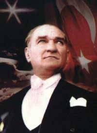
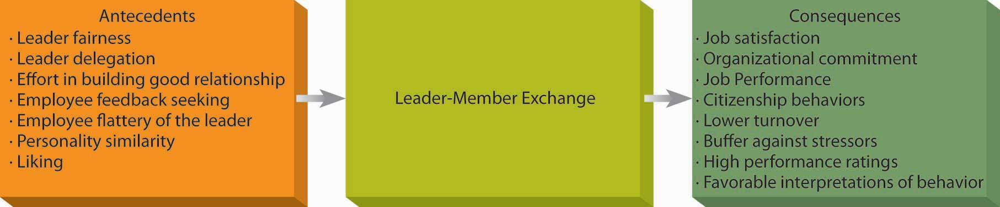

What are the leadership theories that have the greatest contributions to offer to today’s business environment? In this section, we will review the most recent developments in the field of leadership.
Transformational leadership theory is a recent addition to the literature, but more research has been conducted on this theory than all the contingency theories combined. The theory distinguishes transformational and transactional leaders. Transformational leadersThose who lead employees by aligning employee goals with the leader’s goals. These leaders use their charisma, inspirational motivation, intellectual stimulation, and individualized consideration to influence their followers. lead employees by aligning employee goals with the leader’s goals. Thus, employees working for transformational leaders start focusing on the company’s well-being rather than on what is best for them as individual employees. On the other hand, transactional leadersThose who ensure that employees demonstrate the right behaviors and provide resources in exchange. These leaders provide contingent rewards and manage by exception. ensure that employees demonstrate the right behaviors and provide resources in exchange.Bass, B. M. (1985). Leadership and performance beyond expectations. New York: Free Press; Burns, J. M. (1978). Leadership. New York: Harper & Row.
Transformational leaders have four tools in their possession, which they use to influence employees and create commitment to the company goals.Bass, B. M. (1985). Leadership and performance beyond expectations. New York: Free Press; Burns, J. M. (1978). Leadership. New York: Harper & Row; Bycio, P., Hackett, R. D., & Allen, J. S. (1995). Further assessment of Bass’s (1985) conceptualization of transactional and transformational leadership. Journal of Applied Psychology, 80, 468–478; Judge, T. A., & Piccolo, R. F. (2004). Transformational and transactional leadership: A meta-analytic test of their relative validity. Journal of Applied Psychology, 89, 755–768. First, transformational leaders are charismatic. CharismaBehaviors leaders demonstrate that create confidence in, commitment to, and admiration for the leader. refers to behaviors leaders demonstrate that create confidence in, commitment to, and admiration for the leader.Shamir, B., House, R. J., & Arthur, M. B. (1993). The motivational effects of charismatic leadership: A self-concept based theory. Organization Science, 4, 577–594. Charismatic individuals have a “magnetic” personality that is appealing to followers. Second, transformational leaders use inspirational motivationWhen leaders come up with a vision that is inspiring to others., or come up with a vision that is inspiring to others. Third is the use of intellectual stimulationWhen leaders challenge organizational norms and status quo, and encourage employees to think creatively and work harder., which means that they challenge organizational norms and status quo, and they encourage employees to think creatively and work harder. Finally, they use individualized considerationWhen leaders show personal care and concern for the well-being of their followers., which means that they show personal care and concern for the well-being of their followers. Examples of transformational leaders include Steve Jobs of Apple Inc.; Lee Iaccoca, who transformed Chrysler Motors LLC in the 1980s; and Jack Welch, who was the CEO of General Electric Company for 20 years. Each of these leaders is charismatic and is held responsible for the turnarounds of their companies.
While transformational leaders rely on their charisma, persuasiveness, and personal appeal to change and inspire their companies, transactional leaders use three different methods. Contingent rewardsRewarding employees for their accomplishments. mean rewarding employees for their accomplishments. Active management by exceptionLeaving employees alone but at the same time proactively predicting potential problems and preventing them from occurring. involves leaving employees to do their jobs without interference, but at the same time proactively predicting potential problems and preventing them from occurring. Passive management by exceptionLeaving employees alone but then coming to the rescue if anything goes wrong. is similar in that it involves leaving employees alone, but in this method the manager waits until something goes wrong before coming to the rescue.
Which leadership style do you think is more effective, transformational or transactional? Research shows that transformational leadership is a very powerful influence over leader effectiveness as well as employee satisfaction.Judge, T. A., & Piccolo, R. F. (2004). Transformational and transactional leadership: A meta-analytic test of their relative validity. Journal of Applied Psychology, 89, 755–768. In fact, transformational leaders increase the intrinsic motivation of their followers, build more effective relationships with employees, increase performance and creativity of their followers, increase team performance, and create higher levels of commitment to organizational change efforts.Herold, D. M., Fedor, D. B., Caldwell, S., & Liu, Y. (2008). The effects of transformational and change leadership on employees’ commitment to a change: A multilevel study. Journal of Applied Psychology, 93, 346–357; Piccolo, R. F., & Colquitt, J. A. (2006). Transformational leadership and job behaviors: The mediating role of core job characteristics. Academy of Management Journal, 49, 327–340; Schaubroeck, J., Lam, S. K., & Cha, S. E. (2007). Embracing transformational leadership: Team values and the impact of leader behavior on team performance. Journal of Applied Psychology, 92, 1020–1030; Shin, S. J., & Zhou, J. (2003). Transformational leadership, conservation, and creativity: Evidence from Korea. Academy of Management Journal, 46, 703–714; Wang, H., Law, K. S., Hackett, R. D., Duanxu, W., & Zhen, X. C. (2005). Leader-member exchange as a mediator of the relationship between transformational leadership and followers’ performance and organizational citizenship behavior. Academy of Management Journal, 48, 420–432. However, except for passive management by exception, the transactional leadership styles are also effective, and they also have positive influences over leader performance as well as employee attitudes.Judge, T. A., & Piccolo, R. F. (2004). Transformational and transactional leadership: A meta-analytic test of their relative validity. Journal of Applied Psychology, 89, 755–768. To maximize their effectiveness, leaders are encouraged to demonstrate both transformational and transactional styles. They should also monitor themselves to avoid demonstrating passive management by exception, or leaving employees to their own devices until problems arise.
Why is transformational leadership effective? The key factor may be trustThe belief that the other party will show integrity, fairness, and predictability in one’s actions toward the other.. Trust is the belief that the leader will show integrity, fairness, and predictability in his or her dealings with others. Research shows that when leaders demonstrate transformational leadership behaviors, followers are more likely to trust the leader. The tendency to trust in transactional leaders is substantially lower. Because transformational leaders express greater levels of concern for people’s well-being and appeal to people’s values, followers are more likely to believe that the leader has a trustworthy character.Dirks, K. T., & Ferrin, D. L. (2002). Trust in leadership: Meta-analytic findings and implications for research and practice. Journal of Applied Psychology, 87, 611–628.
Is transformational leadership genetic? Some people assume that charisma is something people are born with. You either have charisma, or you don’t. However, research does not support this idea. We must acknowledge that there is a connection between some personality traits and charisma. Specifically, people who have a neurotic personality tend to demonstrate lower levels of charisma, and people who are extraverted tend to have higher levels of charisma. However, personality explains only around 10% of the variance in charisma.Bono, J. E., & Judge, T. A. (2004). Personality and transformational and transactional leadership: A meta-analysis. Journal of Applied Psychology, 89, 901–910. A large body of research has shown that it is possible to train people to increase their charisma and increase their transformational leadership.Barling, J., Weber, T., & Kelloway, E. K. (1996). Effects of transformational leadership training on attitudinal and financial outcomes: A field experiment. Journal of Applied Psychology, 81, 827–832; Dvir, T., Eden, D., Avolio, B. J., & Shamir, B. (2002). Impact of transformational leadership on follower development and performance: A field experiment. Academy of Management Journal, 45, 735–744; Frese, M., Beimel, S., & Schoenborg, S. (2003). Action training for charismatic leadership: Two evaluations of studies of a commercial training module on inspirational communication of a vision. Personnel Psychology, 56, 671–697.
Figure 12.12
Mustafa Kemal Ataturk, the founder of the Turkish Republic and its first president, is known as a charismatic leader. He is widely admired and respected in Turkey and around the world. His picture appears in all schools, state buildings, all denominations of Turkish lira, and in many people’s homes in Turkey.
Even if charisma can be learned, a more fundamental question remains: Is it really needed? Charisma is only one element of transformational leadership, and leaders can be effective without charisma. In fact, charisma has a dark side. For every charismatic hero such as Lee Iaccoca, Steve Jobs, and Virgin Atlantic Airways Ltd.’s Sir Richard Branson, there are charismatic personalities who harmed their organizations or nations, such as Adoph Hitler of Germany and Jeff Skilling of Enron Corporation. Leadership experts warn that when organizations are in a crisis, a board of directors or hiring manager may turn to heroes who they hope will save the organization, and sometimes hire people who have no particular qualifications other than being perceived as charismatic.Khurana, R. (2002, September). The curse of the superstar CEO. Harvard Business Review, 80(9), 60–66.
An interesting study shows that when companies have performed well, their CEOs are perceived as charismatic, but CEO charisma has no relation to the future performance of a company.Agle, B. R., Nagarajan, N. J., Sonnenfeld, J. A., & Srinivasan, D. (2006). Does CEO charisma matter? An empirical analysis of the relationships among organizational performance, environmental uncertainty, and top management team perceptions of CEO charisma. Academy of Management Journal, 49, 161–174. So, what we view as someone’s charisma may be largely because of their association with a successful company, and the success of a company depends on a large set of factors, including industry effects and historical performance. While it is true that charismatic leaders may sometimes achieve great results, the search for charismatic leaders under all circumstances may be irrational.
Sources: Adapted from ideas in Frese, M., Beimel, S., & Schoenborg, S. (2003). Action training for charismatic leadership: Two evaluations of studies of a commercial training module on inspirational communication of a vision. Personnel Psychology, 56, 671–697; Shamir, B., House, R. J., & Arthur, M. B. (1993). The motivational effects of charismatic leadership: A self-concept based theory. Organization Science, 4, 577–594.
Leader-member exchange (LMX) theory proposes that the type of relationship leaders have with their followers (members of the organization) is the key to understanding how leaders influence employees. Leaders form different types of relationships with their employees. In high-quality LMX relationshipsA high-quality, trust-based relationship between a leader and a follower., the leader forms a trust-based relationship with the member. The leader and member like each other, help each other when needed, and respect each other. In these relationships, the leader and the member are each ready to go above and beyond their job descriptions to promote the other’s ability to succeed. In contrast, in low-quality LMX relationshipsA situation in which the leader and the employee have lower levels of trust, liking, and respect toward each other., the leader and the member have lower levels of trust, liking, and respect toward each other. These relationships do not have to involve actively disliking each other, but the leader and member do not go beyond their formal job descriptions in their exchanges. In other words, the member does his job, the leader provides rewards and punishments, and the relationship does not involve high levels of loyalty or obligation toward each other.Dansereau, F., Jr., Graen, G., & Haga, W. J. (1975). A vertical dyad linkage approach to leadership within formal organizations: A longitudinal investigation of the role making process. Organizational Behavior & Human Performance, 13(1), 46–78; Erdogan, B., & Liden, R. C. (2002). Social exchanges in the workplace: A review of recent developments and future research directions in leader-member exchange theory. In L. L. Neider & C. A. Schriesheim (Eds.), Leadership (pp. 65–114), Greenwich, CT: Information Age Press; Gerstner, C. R., & Day, D. V. (1997). Meta-analytic review of leader-member exchange theory: Correlates and construct issues. Journal of Applied Psychology, 82, 827–844; Graen, G. B., & Uhl-Bien, M. (1995). Relationship-based approach to leadership: Development of leader-member exchange (LMX) theory over 25 years: Applying a multi-level multi-domain perspective. Leadership Quarterly, 6(2), 219–247; Liden, R. C., & Maslyn, J. M. (1998). Multidimensionality of leader-member exchange: An empirical assessment through scale development. Journal of Management, 24, 43–72.
Figure 12.13 Antecedents and Consequences of Leader Member Exchange
If you have work experience, you may have witnessed the different types of relationships managers form with their employees. In fact, many leaders end up developing differentiated relationships with their followers. Within the same work group, they may have in-group members who are close to them, and out-group members who are more distant. If you have ever been in a high LMX relationship with your manager, you may attest to the advantages of the relationship. Research shows that high LMX members are more satisfied with their jobs, more committed to their companies, have higher levels of clarity about what is expected of them, and perform at a higher level.Gerstner, C. R., & Day, D. V. (1997). Meta-analytic review of leader-member exchange theory: Correlates and construct issues. Journal of Applied Psychology, 82, 827–844; Hui, C., Law, K. S., & Chen, Z. X. (1999). A structural equation model of the effects of negative affectivity, leader-member exchange, and perceived job mobility on in-role and extra-role performance: A Chinese case. Organizational Behavior and Human Decision Processes, 77, 3–21; Kraimer, M. L., Wayne, S. J., & Jaworski, R. A. (2001). Sources of support and expatriate performance: The mediating role of expatriate adjustment. Personnel Psychology, 54, 71–99; Liden, R. C., Wayne, S. J., & Sparrowe, R. T. (2000). An examination of the mediating role of psychological empowerment on the relations between the job, interpersonal relationships, and work outcomes. Journal of Applied Psychology, 85, 407–416; Settoon, R. P., Bennett, N., & Liden, R. C. (1996). Social exchange in organizations: Perceived organizational support, leader-member exchange, and employee reciprocity. Journal of Applied Psychology, 81, 219–227; Tierney, P., Farmer, S. M., & Graen, G. B. (1999). An examination of leadership and employee creativity: The relevance of traits and relationships. Personnel Psychology, 52, 591–620; Wayne, S. J., Shore, L. M., & Liden. R. C. (1997). Perceived organizational support and leader-member exchange: A social exchange perspective. Academy of Management Journal, 40, 82–111. Employees’ high levels of performance may not be a surprise, since they receive higher levels of resources and help from their managers as well as more information and guidance. If they have questions, these employees feel more comfortable seeking feedback or information.Chen, Z., Lam, W., & Zhong, J. A. (2007). Leader-member exchange and member performance: A new look at individual-level negative feedback seeking behavior and team-level empowerment climate. Journal of Applied Psychology, 92, 202–212. Because of all the help, support, and guidance they receive, employees who have a good relationship with the manager are in a better position to perform well. Given all they receive, these employees are motivated to reciprocate to the manager, and therefore they demonstrate higher levels of citizenship behaviors such as helping the leader and coworkers.Ilies, R., Nahrgang, J. D., & Morgeson, F. P. (2007). Leader-member exchange and citizenship behaviors: A meta-analysis. Journal of Applied Psychology, 92, 269–277. Being in a high LMX relationship is also advantageous because a high-quality relationship is a buffer against many stressors, such as being a misfit in a company, having personality traits that do not match job demands, and having unmet expectations.Bauer, T. N., Erdogan, B., Liden, R. C., & Wayne, S. J. (2006). A longitudinal study of the moderating role of extraversion: Leader-member exchange, performance, and turnover during new executive development. Journal of Applied Psychology, 91, 298–310; Erdogan, B., Kraimer, M. L., & Liden, R. C. (2004). Work value congruence and intrinsic career success. Personnel Psychology, 57, 305–332; Major, D. A., Kozlowski, S. W., Chao, G. T., & Gardner, P. D. (1995). A longitudinal investigation of newcomer expectations, early socialization outcomes, and the moderating effects of role development factors. Journal of Applied Psychology, 80, 418–431. The list of the benefits high LMX employees receive is long, and it is not surprising that these employees are less likely to leave their jobs.Ferris, G. R. (1985). Role of leadership in the employee withdrawal process: A constructive replication. Journal of Applied Psychology, 70, 777–781; Graen, G. B., Liden, R. C., & Hoel, W. (1982). Role of leadership in the employee withdrawal process. Journal of Applied Psychology, 67, 868–872.
The problem, of course, is that not all employees have a high-quality relationship with their leader, and those who are in the leader’s out-group may suffer as a result. But how do you develop a high-quality relationship with your leader? It seems that this depends on many factors. Managers can help develop such a meaningful and trust-based relationship by treating their employees in a fair and dignified manner.Masterson, S. S., Lewis, K., Goldman, B. M., & Taylor, M. S. (2000). Integrating justice and social exchange: The differing effects of fair procedures and treatment on work relationships. Academy of Management Journal, 43, 738–748. They can also test to see if the employee is trustworthy by delegating certain tasks when the employee first starts working with the manager.Bauer, T. N., & Green, S. G. (1996). Development of a leader-member exchange: A longitudinal test. Academy of Management Journal, 39, 1538–1567. Employees also have an active role in developing the relationship. Employees can put forth effort into developing a good relationship by seeking feedback to improve their performance, being open to learning new things on the job, and engaging in political behaviors such as the use of flattery.Colella, A., & Varma, A. (2001). The impact of subordinate disability on leader-member exchange relationships. Academy of Management Journal, 44, 304–315; Maslyn, J. M., & Uhl-Bien, M. (2001). Leader-member exchange and its dimensions: Effects of self-effort and other’s effort on relationship quality. Journal of Applied Psychology, 86, 697–708; Janssen, O., & Van Yperen, N. W. (2004). Employees’ goal orientations, the quality of leader-member exchange, and the outcomes of job performance and job satisfaction. Academy of Management Journal, 47, 368–384; Wing, L., Xu, H., & Snape, E. (2007). Feedback-seeking behavior and leader-member exchange: Do supervisor-attributed motives matter? Academy of Management Journal, 50, 348–363. Interestingly, high performance does not seem to be enough to develop a high-quality exchange. Instead, interpersonal factors such as the similarity of personalities and a mutual liking and respect are more powerful influences over how the relationship develops.Engle, E. M., & Lord, R. G. (1997). Implicit theories, self-schemas, and leader-member exchange. Academy of Management Journal, 40, 988–1010; Liden, R. C., Wayne, S. J., & Stilwell, D. (1993). A longitudinal study on the early development of leader-member exchanges. Journal of Applied Psychology, 78, 662–674; Wayne, S. J., Shore, L. M., & Liden. R. C. (1997). Perceived organizational support and leader-member exchange: A social exchange perspective. Academy of Management Journal, 40, 82–111. Finally, the relationship develops differently in different types of companies, and corporate culture matters in how leaders develop these relationships. In performance-oriented cultures, the relevant factor seems to be how the leader distributes rewards, whereas in people-oriented cultures, the leader treating people with dignity is more important.Erdogan, B., Liden, R. C., & Kraimer, M. L. (2006). Justice and leader-member exchange: The moderating role of organizational culture. Academy of Management Journal, 49, 395–406.
Answer the following questions using 1 = not at all, 2 = somewhat, 3 = fully agree.
| 1. | _____ | I like my supervisor very much as a person. |
| 2. | _____ | My supervisor is the kind of person one would like to have as a friend. |
| 3. | _____ | My supervisor is a lot of fun to work with. |
| 4. | _____ | My supervisor defends my work actions to a superior, even without complete knowledge of the issue in question. |
| 5. | _____ | My supervisor would come to my defense if I were “attacked” by others. |
| 6. | _____ | My supervisor would defend me to others in the organization if I made an honest mistake. |
| 7. | _____ | I do work for my supervisor that goes beyond what is specified in my job description. |
| 8. | _____ | I am willing to apply extra efforts, beyond those normally required, to further the interests of my work group. |
| 9. | _____ | I do not mind working my hardest for my supervisor. |
| 10. | _____ | I am impressed with my supervisor’s knowledge of his or her job. |
| 11. | _____ | I respect my supervisor’s knowledge of and competence on the job. |
| 12. | _____ | I admire my supervisor’s professional skills. |
Scoring:
Add your score for 1, 2, 3 = _____ . This is your score on the Liking factor of LMX.
A score of 3 to 4 indicates a low LMX in terms of liking. A score of 5 to 6 indicates an average LMX in terms of liking. A score of 7+ indicates a high LMX in terms of liking.
Add your score for 4, 5, 6 = _____ . This is your score on the Loyalty factor of LMX.
A score of 3 to 4 indicates a low LMX in terms of loyalty. A score of 5 to 6 indicates an average LMX in terms of loyalty. A score of 7+ indicates a high LMX in terms of loyalty.
Add your score for 7, 8, 9 = _____ . This is your score on the Contribution factor of LMX.
A score of 3 to 4 indicates a low LMX in terms of contribution. A score of 5 to 6 indicates an average LMX in terms of contribution. A score of 7+ indicates a high LMX in terms of contribution.
Add your score for 10, 11, 12 = _____ . This is your score on the Professional Respect factor of LMX.
A score of 3 to 4 indicates a low LMX in terms of professional respect. A score of 5 to 6 indicates an average LMX in terms of professional respect. A score of 7+ indicates a high LMX in terms of professional respect.
Source: Adapted from Liden, R. C., & Maslyn, J. M. (1998). Multidimensionality of leader-member exchange: An empirical assessment through scale development. Journal of Management, 24, 43–72. Used by permission of Sage Publications.
Should you worry if you do not have a high-quality relationship with your manager? One problem in a low-quality exchange is that employees may not have access to the positive work environment available to high LMX members. Secondly, low LMX employees may feel that their situation is unfair. Even when their objective performance does not warrant it, those who have a good relationship with the leader tend to have positive performance appraisals.Duarte, N. T., Goodson, J. R., & Klich, N. R. (1994). Effects of dyadic quality and duration on performance appraisal. Academy of Management Journal, 37, 499–521. Moreover, they are more likely to be given the benefit of the doubt. For example, when high LMX employees succeed, the manager is more likely to think that they succeeded because they put forth a lot of effort and had high abilities, whereas for low LMX members who perform objectively well, the manager is less likely to make the same attribution.Heneman, R. L., Greenberger, D. B., & Anonyuo, C. (1989). Attributions and exchanges: The effects of interpersonal factors on the diagnosis of employee performance. Academy of Management Journal, 32, 466–476. In other words, the leader may interpret the same situation differently, depending on which employee is involved, and may reward low LMX employees less despite equivalent performance. In short, those with a low-quality relationship with their leader may experience a work environment that may not be supportive or fair.
Despite its negative consequences, we cannot say that all employees want to have a high-quality relationship with their leader. Some employees may genuinely dislike the leader and may not value the rewards in the leader’s possession. If the leader is not well liked in the company and is known as abusive or unethical, being close to such a person may imply guilt by association. For employees who have no interest in advancing their careers in the current company (such as a student employee who is working in retail but has no interest in retail as a career), having a low-quality exchange may afford the opportunity to just do one’s job without having to go above and beyond the job requirements. Finally, not all leaders are equally capable of influencing their employees by having a good relationship with them: It also depends on the power and influence of the leader in the company as a whole and how the leader is treated within the organization. Leaders who are more powerful will have more to share with their employees.Erdogan, B., & Enders, J. (2007). Support from the top: Supervisors’ perceived organizational support as a moderator of leader-member exchange to satisfaction and performance relationships. Journal of Applied Psychology, 92, 321–330; Sparrowe, R. T., & Liden, R. C. (2005). Two routes to influence: Integrating leader-member exchange and social network perspectives. Administrative Science Quarterly, 50, 505–535; Tangirala, S., Green, S. G., & Ramanujam, R. (2007). In the shadow of the boss’s boss: Effects of supervisors’ upward exchange relationships on employees. Journal of Applied Psychology, 92, 309–320.
What LMX theory implies for leaders is that one way of influencing employees is through the types of relationships leaders form with their subordinates. These relationships develop naturally through the work-related and personal interactions between the manager and the employee. Because they occur naturally, some leaders may not be aware of the power that lies in them. These relationships have an important influence over employee attitudes and behaviors. In the worst case, they have the potential to create an environment characterized by favoritism and unfairness. Therefore, managers are advised to be aware of how they build these relationships: Put forth effort in cultivating these relationships consciously, be open to forming good relationships with people from all backgrounds regardless of characteristics such as sex, race, age, or disability status, and prevent these relationships from leading to an unfair work environment.
Having a good relationship with your manager may substantially increase your job satisfaction, improve your ability to communicate with your manager, and help you be successful in your job. Here are some tips to developing a high-quality exchange.
Sources: Based on information presented in Colella, A., & Varma, A. (2001). The impact of subordinate disability on leader-member exchange relationships. Academy of Management Journal, 44, 304–315; Liden, R. C., Wayne, S. J., & Stilwell, D. (1993). A longitudinal study on the early development of leader-member exchanges. Journal of Applied Psychology, 78, 662–674; Maslyn, J. M., & Uhl-Bien, M. (2001). Leader-member exchange and its dimensions: Effects of self-effort and other’s effort on relationship quality. Journal of Applied Psychology, 86, 697–708; Wing, L., Xu, H., & Snape, E. (2007). Feedback-seeking behavior and leader-member exchange: Do supervisor-attributed motives matter? Academy of Management Journal, 50, 348–363.
The early 21st century has been marked by a series of highly publicized corporate ethics scandals: Between 2000 and 2003 we witnessed the scandals of Enron, WorldCom, Arthur Andersen LLP, Qwest Communications International Inc., and Global Crossing Ltd. As corporate ethics scandals shake investor confidence in corporations and leaders, the importance of ethical leadership and keeping long-term interests of stakeholders in mind is becoming more widely acknowledged.
Servant leadershipA leadership approach that defines the leader’s role as serving the needs of others. is a leadership approach that defines the leader’s role as serving the needs of others. According to this approach, the primary mission of the leader is to develop employees and help them reach their goals. Servant leaders put their employees first, understand their personal needs and desires, empower them, and help them develop in their careers. Unlike mainstream management approaches, the overriding objective in servant leadership is not limited to getting employees to contribute to organizational goals. Instead, servant leaders feel an obligation to their employees, customers, and the external community. Employee happiness is seen as an end in itself, and servant leaders sometimes sacrifice their own well-being to help employees succeed. In addition to a clear focus on having a moral compass, servant leaders are also interested in serving the community. In other words, their efforts to help others are not restricted to company insiders, and they are genuinely concerned about the broader community surrounding their organization.Greenleaf, R. K. (1977). Servant Leadership: A journey into the nature of legitimate power and greatness. Mahwah, NJ: Paulist Press; Liden, R. C., Wayne, S., J., Zhao, H., & Henderson, D. (2008). Servant leadership: Development of a multidimensional measure and multi-level assessment. Leadership Quarterly, 19, 161–177. According to historian Doris Kearns Goodwin, Abraham Lincoln was a servant leader because of his balance of social conscience, empathy, and generosity.Goodwin, D. K. (2005, June 26). The master of the game. Time. Retrieved November 20, 2008, from http://www.time.com/time/printout/0,8816,1077300,00.html.
Even though servant leadership has some overlap with other leadership approaches such as transformational leadership, its explicit focus on ethics, community development, and self-sacrifice are distinct characteristics of this leadership style. Research shows that servant leadership has a positive impact on employee commitment, employee citizenship behaviors toward the community (such as participating in community volunteering), and job performance.Liden, R. C., Wayne, S., J., Zhao, H., & Henderson, D. (2008). Servant leadership: Development of a multidimensional measure and multi-level assessment. Leadership Quarterly, 19, 161–177. Leaders who follow the servant leadership approach create a climate of fairness in their departments, which leads to higher levels of interpersonal helping behavior.Ehrhart, M. G. (2004). Leadership and procedural justice climate as antecedents of unit-level organizational citizenship behavior. Personnel Psychology, 57, 61–94.
Servant leadership is a tough transition for many managers who are socialized to put their own needs first, be driven by success, and tell people what to do. In fact, many of today’s corporate leaders are not known for their humility! However, leaders who have adopted this approach attest to its effectiveness. David Wolfskehl, of Action Fast Print in New Jersey, founded his printing company when he was 24 years old. He marks the day he started asking employees what he can do for them as the beginning of his company’s new culture. In the next 2 years, his company increased its productivity by 30%.Buchanan, L. (2007, May). In praise of selflessness: Why the best leaders are servants. Inc., 29(5), 33–35.
One of the influential leadership paradigms involves leaders putting others first. This could be a hard transition for an achievement-oriented and success-driven manager who rises to high levels. Here are some tips to achieve servant leadership.
Sources: Based on information presented in Buchanan, L. (2007, May). In praise of selflessness: Why the best leaders are servants. Inc, 29(5), 33–35; Douglas, M. E. (2005, March). Service to others. Supervision, 66(3), 6–9; Ramsey, R. D. (2005, October). The new buzz word. Supervision, 66(10), 3–5.
Leaders have to be a lot of things to a lot of people. They operate within different structures, work with different types of people, and they have to be adaptable. At times, it may seem that a leader’s smartest strategy would be to act as a social chameleon, changing his or her style whenever doing so seems advantageous. But this would lose sight of the fact that effective leaders have to stay true to themselves. The authentic leadership approachA leadership approach advising leaders to stay true to their own values. embraces this value: Its key advice is “be yourself.” Think about it: We all have different backgrounds, different life experiences, and different role models. These trigger events over the course of our lifetime that shape our values, preferences, and priorities. Instead of trying to fit into societal expectations about what a leader should be, act like, or look like, authentic leaders derive their strength from their own past experiences. Thus, one key characteristic of authentic leaders is that they are self aware. They are introspective, understand where they are coming from, and have a thorough understanding of their own values and priorities. Secondly, they are not afraid to act the way they are. In other words, they have high levels of personal integrity. They say what they think. They behave in a way consistent with their values. As a result, they remain true to themselves. Instead of trying to imitate other great leaders, they find their own style in their personality and life experiences.Avolio, B. J., & Gardner, W. L. (2005). Authentic leadership development: Getting to the root of positive forms of leadership. Leadership Quarterly, 16, 315–338; Gardner, W. L., Avolio, B. J., Luthans, F., May, D. R., & Walumbwa, F. (2005). “Can you see the real me?” A self-based model of authentic leader and follower development. Leadership Quarterly, 16, 343–372; George, B. (2007). Authentic leaders: They inspire and empower others. Leadership Excellence, 24(9), 16–17; Ilies, R., Morgeson, F. P., & Nahrgang, J. D. (2005). Authentic leadership and eudaemonic well-being: Understanding leader-follower outcomes. Leadership Quarterly, 16, 373–394; Sparrowe, R. T. (2005). Authentic leadership and the narrative self. Leadership Quarterly, 16, 419–439.
One example of an authentic leader is Howard Schultz, the founder of Starbucks Corporation coffeehouses. As a child, Schultz witnessed the job-related difficulties his father experienced as a result of medical problems. Even though he had no idea he would have his own business one day, the desire to protect people was shaped in those years and became one of his foremost values. When he founded Starbucks, he became an industry pioneer by providing health insurance and retirement coverage to part-time as well as full-time employees.Shamir, B., & Eilam, G. (2005). What’s your story? A life-stories approach to authentic leadership development. Leadership Quarterly, 16, 395–417.
Figure 12.14
An example of an authentic leader is Howard Schultz, the founder of Starbucks coffeehouses. Witnessing his father losing jobs because of medical problems, he became passionate about a company’s need to care for its employees.
Authentic leadership requires understanding oneself. Therefore, in addition to self reflection, feedback from others is needed to gain a true understanding of one’s behavior and its impact on others. Authentic leadership is viewed as a potentially influential style, because employees are more likely to trust such a leader. Moreover, working for an authentic leader is likely to lead to greater levels of satisfaction, performance, and overall well-being on the part of employees.Walumbwa, F. O., Avolio, B. J., Gardner, W. L., Wernsing, T. S., & Peterson, S. J. (2008). Authentic leadership: Development and validation of a theory-based measure. Journal of Management, 34, 89–126.
Contemporary approaches to leadership include transformational leadership, leader-member exchange, servant leadership, and authentic leadership. The transformational leadership approach highlights the importance of leader charisma, inspirational motivation, intellectual stimulation, and individualized consideration as methods of influence. Its counterpart is the transactional leadership approach, in which the leader focuses on getting employees to achieve organizational goals. According to the leader-member exchange (LMX) approach, the unique, trust-based relationships leaders develop with employees are the key to leadership effectiveness. Recently, leadership scholars started to emphasize the importance of serving others and adopting a customer-oriented view of leadership; another recent focus is on the importance of being true to oneself as a leader. While each leadership approach focuses on a different element of leadership, effective leaders will need to change their style based on the demands of the situation, as well as utilizing their own values and moral compass.


{kind=link}
{kind=link}